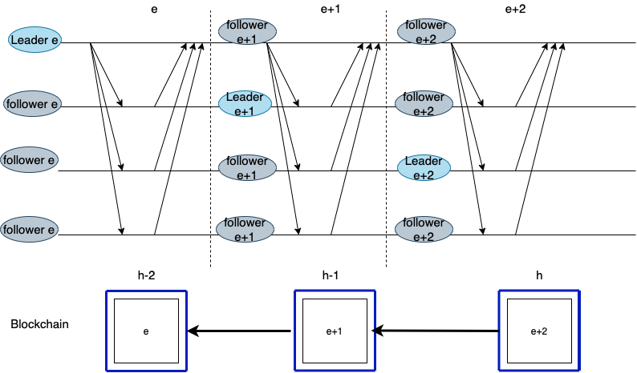
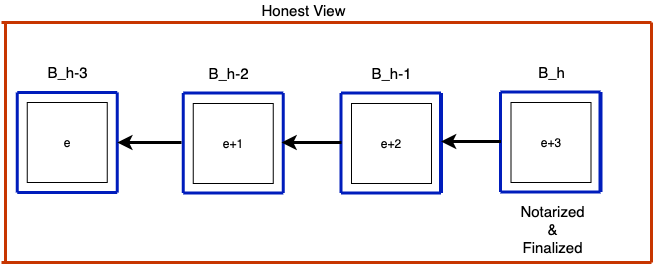
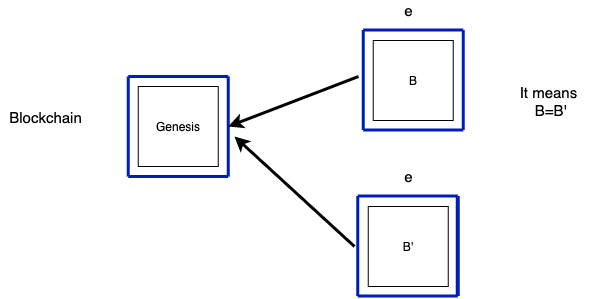
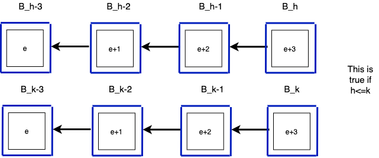
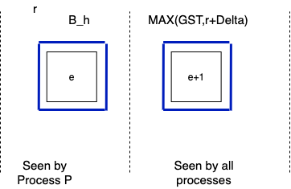
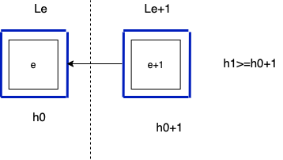
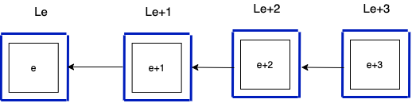
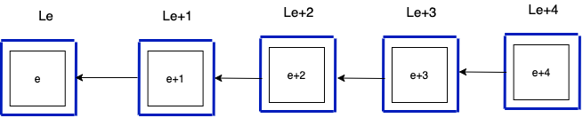

State the goal of the paper (not the title): This paper introduced a simple paradiam for constructing consensus protocol called streamlet. Streamlet is permissioned consensus protcol and has only one mode of execution called propose-vote. The protocol is rotated leader where each block proposed by different leader. Streamlet tolerate 1/3 adversary model and toerate arbitrary network delay(partially synchronosu). It also support synchrbnous mode where majorty is 1/2. Discuss background of the article, and what is the new contribution in the paper This paper has a lot of similarity between hotstuff and nakamoto consensus protocol. It a single type of vote. It has a unified propose-vote paradigm. It is similar to Nakamoto blockchain.
Describe the contribution of the paper (methodology/technique/algorithm)
Streamlet in nutshell.

protocol proceeds in epoch e where each epoch 2 delta rounds.
Each epoch e has a unique leader is elected according to some publicly known function.
Explain how the authors obtained the results (case study/experiment/survey/literature review)
Explain how the authors evaluated the results
Highlight the conclusions of the paper
Reference of the paper in APA format
Fact1
If last block is finazlied and notralized in honest view. That means we only has one blockchain that ends in B_h and every honest nodes observe it.


(S=⅔N-F) --> Signed by block b in epoch e.
(S'=⅔N-F)
-->
Signed by block b' in epoch e.
|S ∩ S'| > 0.
For example, if 1,2,3,4 nodes vote for block b, then vote for block b'. Then, there should be at least one node vote for both.
Lemma 1 if we have 3 consecutive blocks there is no conflicts.

Theorem 2 (Consistency) are two notarized chains in honest view and both chains end at three blocks with consecutive epochs.
Liveness proof:
livness guarantee after GST.


1- Every processes will observe notarized chain ending with h2.
2- no conflict.


Synchrnous:
n/2 at lease half.
6 consecutive block.
The paper did not offer much. I also find the paper to bog down in repeated details. Weaknesses: this paper attempts to achieve something already exist. Strengths: combined two protocols. The paper does not present a significant advance, as stated by the authors them selves (first step);" (sic) (the paper says "This work is only a first step.") Ouch. I hate getting penalized for being honest. Yes, I removed that phrasing for the next version we submitted. 1. Summary. Give a brief summary of the work in your own words. This section demonstrates your understanding of the paper, and as such it should answer the four questions outlined in Section 1. The summary section should be structured as follows: (1) motivation, (2) contribution, (3) methodology and/or argument, and (4) conclusion. It is imperative that you use your own words to summarize the paper. Failing to adhere to this guideline not only constitutes plagarism, but also demonstrates that you probably do not quite understand the work. You can be sure that you understand something only when you are capable of explaining it in your own words. 2. Critique. Pick two to three points4 you want to argue with the authors5 . Use the questions outlined in Section 2 to help you come up with meaningful critiques. Do not repeat the Limitations section of the paper. Doing so means that you agree with the authors! Pick points of disagreement, and launch an intellectual debate with the authors. Carefully articulate and substantiate your case. Do not just say, “I don’t like this point.” Instead, give technical reasons to substantiate your critiques. Be specific in your choice of words. Avoid generic adjectives such as “bad”, “poor”, “lame”, “stupid”, etc, and their synonyms and antonyms. You can go a lot further by replacing such vague words with more specific ones: “inelegant”, “inefficient”, “memory-intensive”, “ill-defined”, etc. 3. Synthesis. Propose one to two ways in which the research work can be further developed. Do not repeat the Future Work section of the paper. Be original. Consult the list of questions in Section 3 if you run out of ideas. The paper is paradiam approach with no evaluations. The authors did not refer appropriately the past work. No technical or engineering contribution.